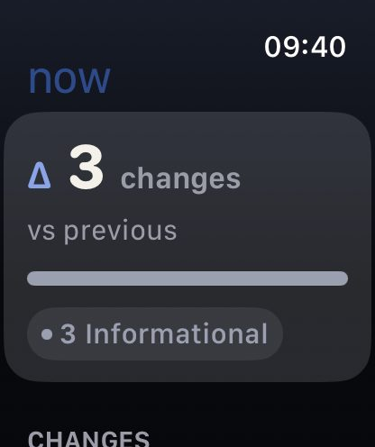
Δ on your wrist
Standalone watch app and complications. No paired iPhone required. The widget never decodes a snapshot — just a count and a peak severity.
Local-first · Five native apps
Take a snapshot. Use your machine. Take another. Diffuse diffs the two — on this device, in this session, without an account, a cloud, or a telemetry pipeline.
The question
Diffuse is not a dashboard of everything. It is a record of what moved — Node upgraded, a volume vanished, Wi-Fi flipped from Home to Office, a watched repo changed branch.
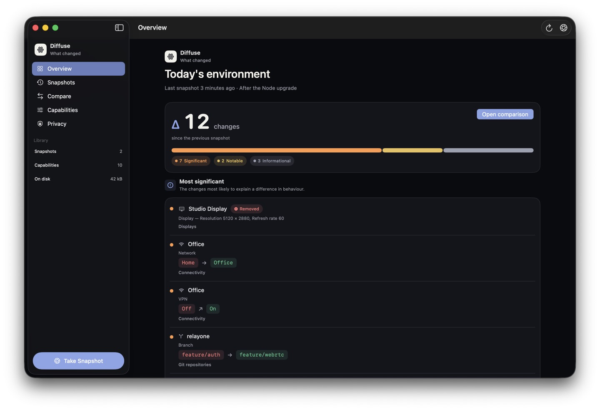
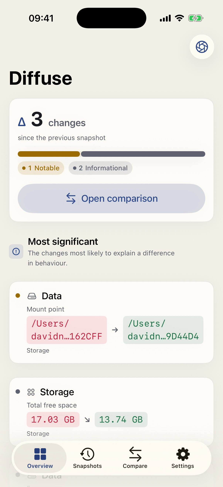
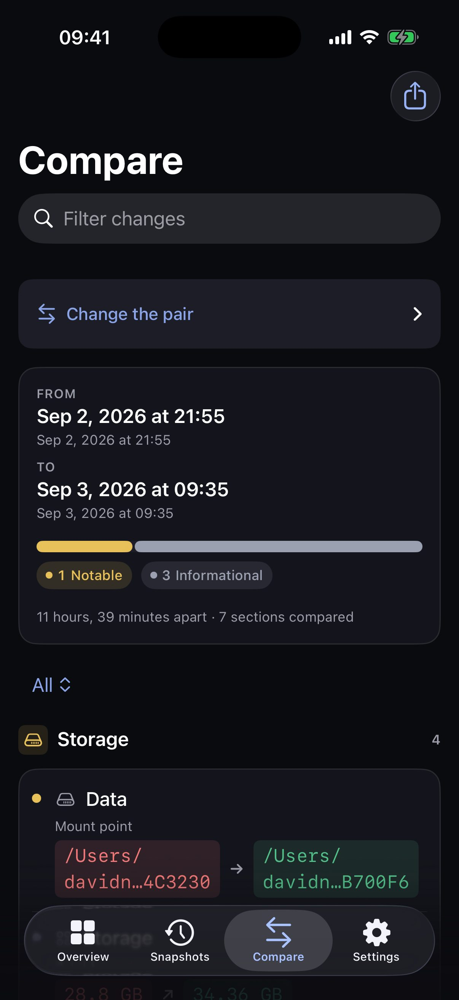

Standalone watch app and complications. No paired iPhone required. The widget never decodes a snapshot — just a count and a peak severity.
Five apps
Same question everywhere. Adaptive Compose on Android. Split view on Mac. Tabs on iPhone. Three columns on iPad, including portrait. A glance on Watch.
Navigation split view, menu bar extra, scheduled capture on a timer and on wake,
repository watch list, developer-tool collectors. Not sandboxed — because spawning
node --version should not hide behind a temporary exception.
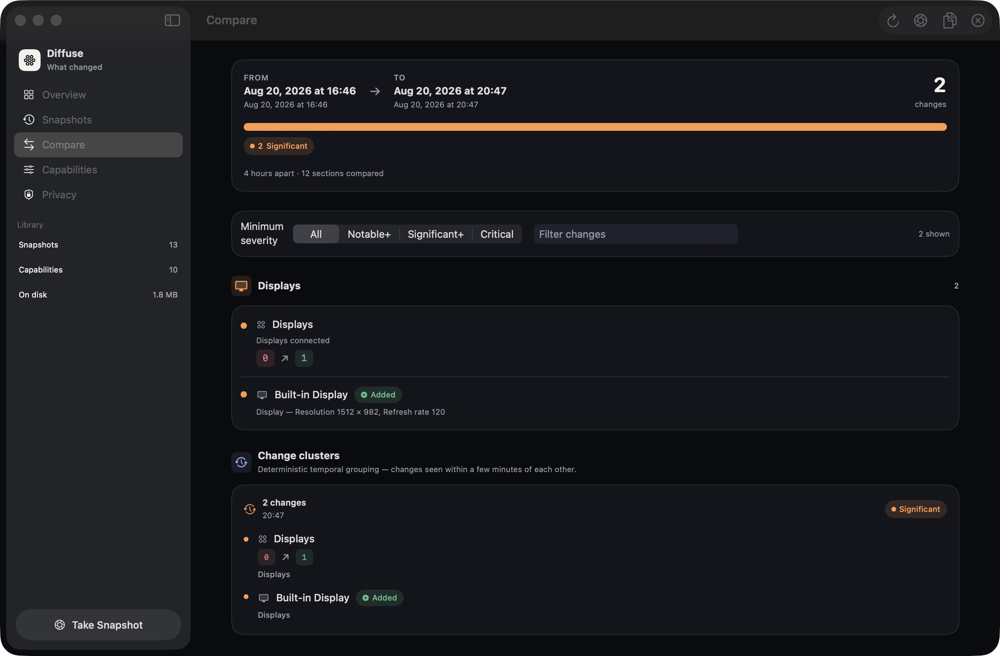
Snapshots, changes, and clusters side by side. Regular width never collapses to a phone layout.
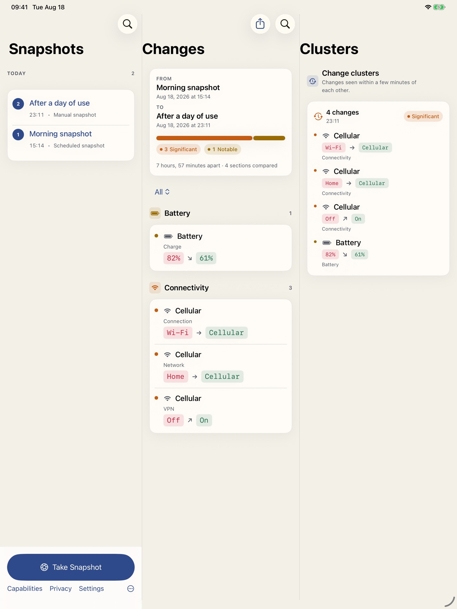
Overview, timeline, compare, settings. Capture on open, on demand, and via background refresh.
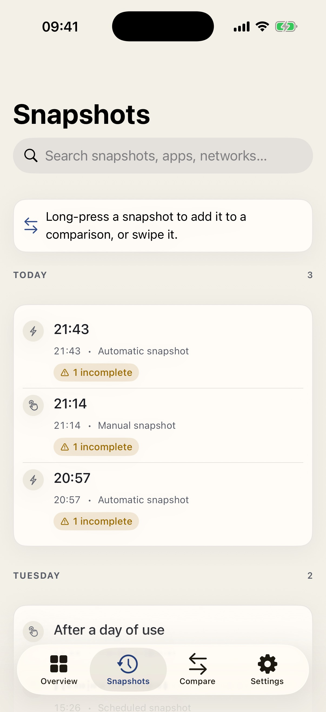
Native Compose UI, adaptive navigation, local JSON history, privacy-led export, and WorkManager scheduling. No Swift bridge and no Internet permission.
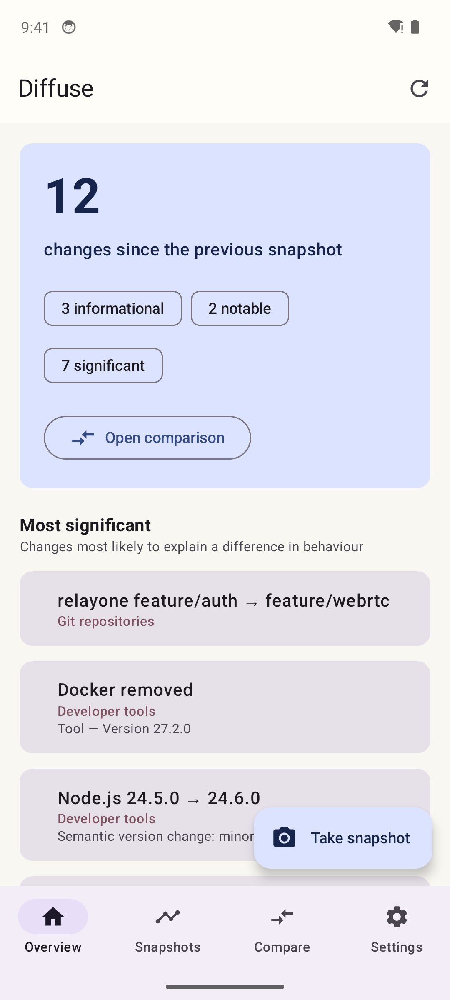
What it observes
A capability is a stable id, a travelling schema, and a collector. Register it only where the hardware can actually see it. Adding Bun is a tool adapter. Adding Bluetooth peripherals would be a new capability.
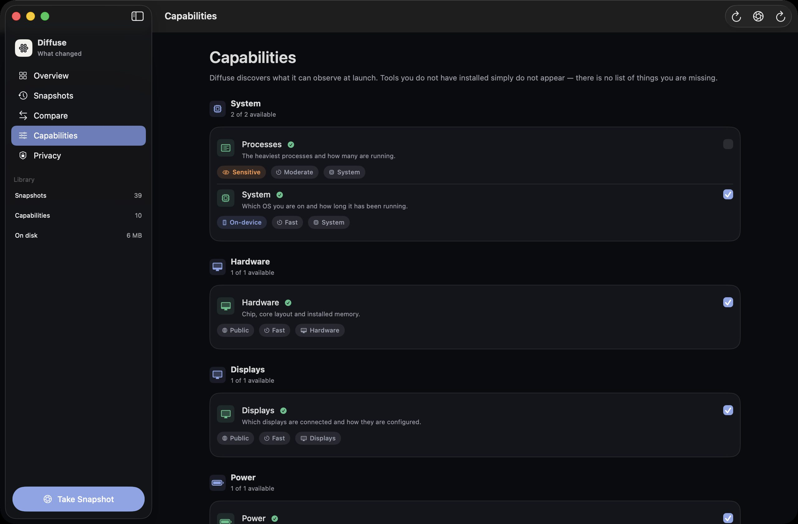
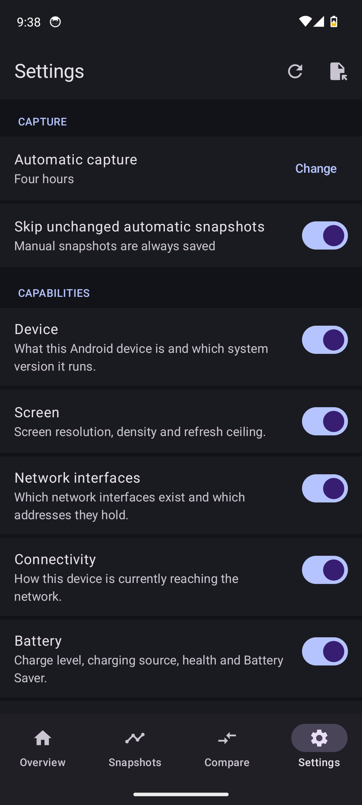
How it works
Adding something new to observe is a typed model, a collector, a registry line, and a test. Not a new screen. Not a new diff algorithm.
01 · Capture
Collectors run concurrently with a deadline. One failure never fails the snapshot. Manual captures always persist. Automatic ones can skip if nothing moved.
02 · Compare
Pick any two snapshots — the list lives on the compare screen, not a tab away — and
they are diffed oldest to newest whichever order you chose them in. Identity matching,
semantic versions, relative free-space noise, severity, clustering.
diff(A, A) is empty. Change ids are content-derived — no random UUIDs.
03 · Keep
Application Support. One JSON file per snapshot plus a rebuildable index. Retention never deletes the newest. Export redacts by classification.
Default cadence, with a 15-minute floor so a laptop that sleeps repeatedly does not flood the timeline.
Mac captures on unlock. iPhone and iPad use background refresh. Watch uses its own refresh task. Android uses WorkManager. Same decide function.
Automatic captures may skip persist when the latest snapshot diffs empty. Pressing capture always saves.
Retention never deletes the newest snapshot. Pinned and labelled ones are protected. Preview before prune.
A workday
Same Mac, morning to evening. Diffuse does not infer why — it reports what moved, with severity, and groups changes a few minutes apart.
Scope
These are product decisions, recorded as ADRs — not missing features.
Privacy
An SSID is how you see Home → Office. It is also how a gist becomes a map of your life. Collection stores the real value. Sharing applies a policy.
Restricted fields never leave — even on “full detail.” Process listing is off until you turn it on. Git records branch, dirty, ahead/behind, and a remote host. Not file names. Not diffs.
diffuse-dev
Capture, inspect, diff, validate, and print the generated privacy ledger from a terminal. Proof that the product is a domain, not a SwiftUI screen.
# What can this Mac observe right now? swift run diffuse-dev capabilities # Capture, then compare swift run diffuse-dev snapshot /tmp/before.json --repos "$HOME/code/Diffuse" swift run diffuse-dev snapshot /tmp/after.json --label "after lunch" swift run diffuse-dev diff /tmp/before.json /tmp/after.json --markdown # Fail a job if the build environment drifted swift run diffuse-dev diff "$BEFORE" "$AFTER" --fail-on-change
capabilities
What this machine can observe right now, and why a collector is unavailable.
inspect · validate
Summarise a file. Fail if the snapshot does not match the current schema.
privacy
Print the generated ledger — the same contract the in-app Privacy screen uses.
--fail-on-change
Exit 2 when significant changes exist. A CI gate for environment drift.
Inside the apps
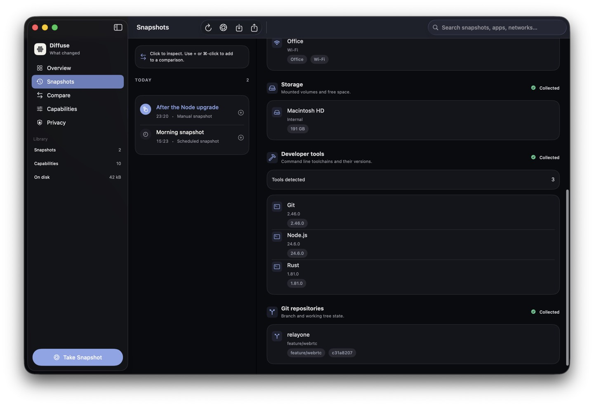
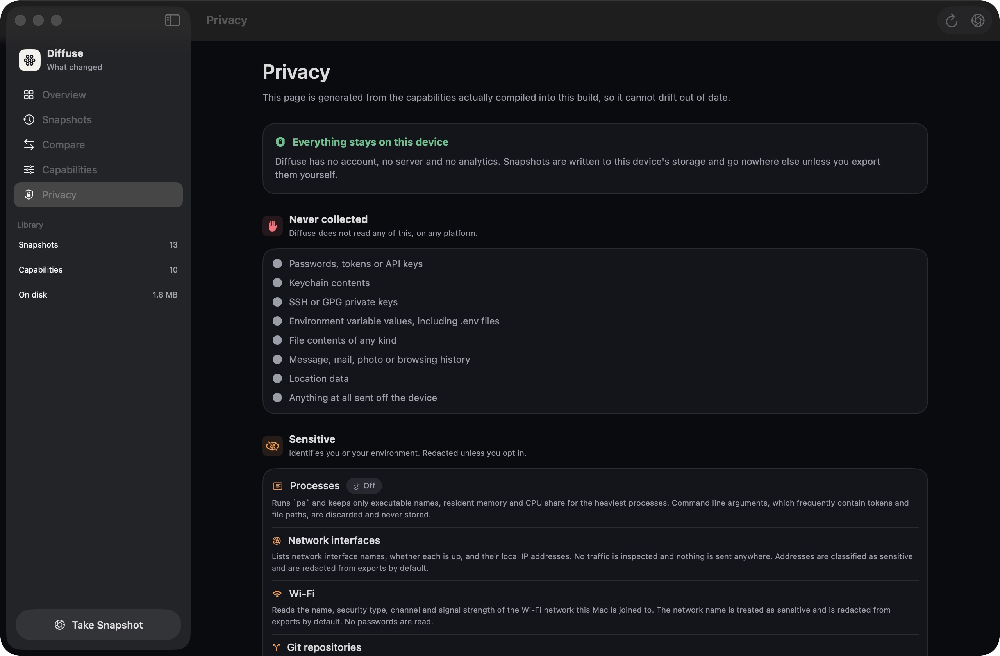
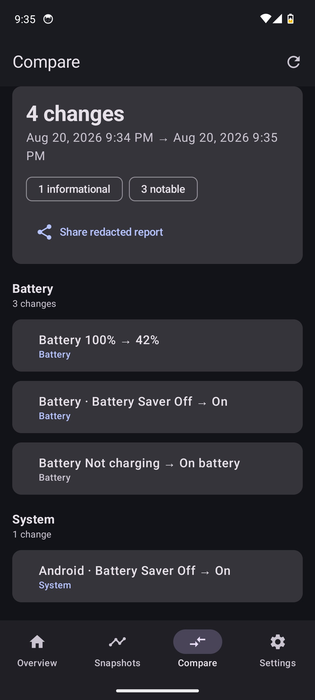
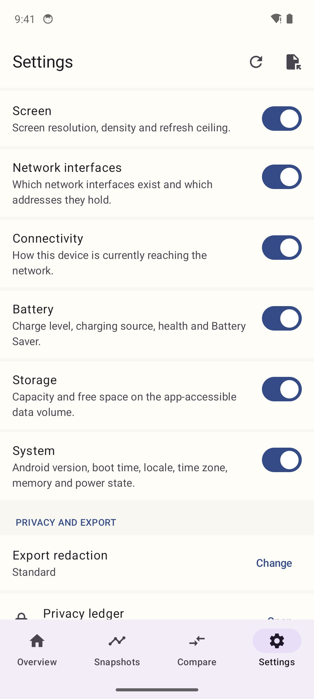
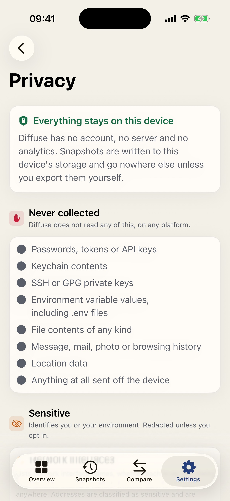
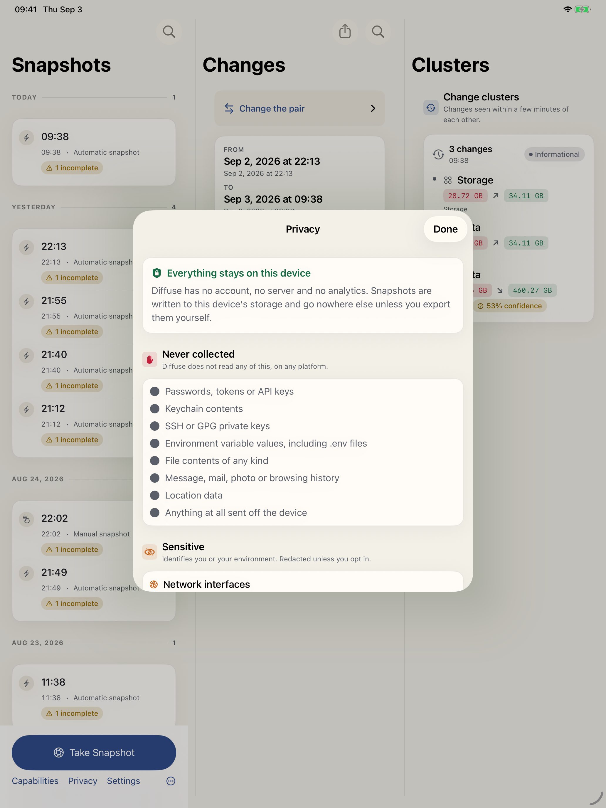
Start
macOS, Xcode 16+ / Swift 6, XcodeGen, SwiftFormat for Apple. JDK 17+ and Android SDK 36 for the Kotlin app. A healthy Apple checkout prints Diffuse is healthy.
Generates the Xcode project from project.yml. The .xcodeproj is gitignored on purpose.
./Scripts/bootstrap.sh
Format lint, tests, iOS/watchOS cross-check, unsigned Apple builds, plus a separate Android test, lint, coverage, and build pipeline.
./Scripts/verify.sh
Same engine as the Apple apps. Writes a file you name — it does not open Application Support.
swift run diffuse-dev snapshot
Independent Kotlin engine. Fixture tests decode the same golden snapshots the Swift suite pins.
cd Android && ./gradlew testDebugUnitTest
FAQ
No. Each device is a closed history. Export if you need a copy — Files, AirDrop, or
diffuse-dev — with a redaction policy.
Application Support / Diffuse/ on that device. Pretty-printed JSON plus a
rebuildable index. You can open one in a text editor.
Developer-tool collectors spawn git and node --version. The
App Sandbox forbids that without a temporary exception per binary. Documented, not
papered over.
No account, no cloud, no crash reporter that uploads snapshots. GitHub is for source and CI artifacts only.
Nothing. MIT licensed. Unsigned CI builds; you sign whatever you ship.
Default cadence is every four hours, with a 15-minute floor on every trigger including wake. Skip-if-unchanged applies to automatic captures only.
Unsigned builds have no app-group container. The extension still compiles and shows empty rather than crashing.
No. Collectors take a fake process runner. Live capture tests stay on cheap, stable Mac collectors. Android JVM tests read Fixtures/ directly.
No. It is native Kotlin and Jetpack Compose with its own domain engine. Compatibility is schema-v1 JSON and golden fixtures — not a shared runtime, JNI bridge, or Flutter shell.
No. It reads ACCESS_NETWORK_STATE so connectivity can be observed. There is no
INTERNET permission, no account, and no backup of snapshots.
The app-private files directory as pretty-printed JSON. They are excluded from Android backup and device transfer. Export is a user-picked share with the same classification rules as Apple.
Clone it. Capture once. Capture again. Read the diff. Nothing in this product requires permission from a server.